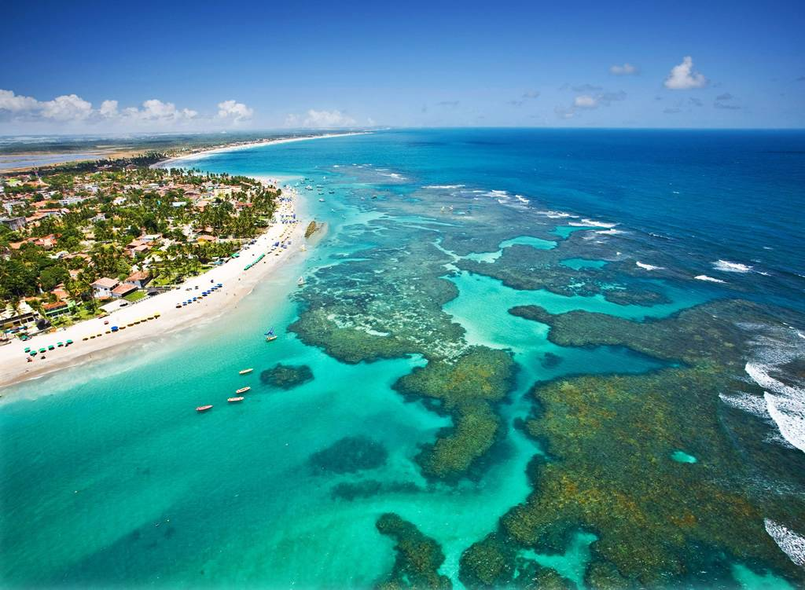

Pontos Turísticos

Porto de Galinhas
Porto de Galinhas é uma praia localizada no distrito homônimo, pertencente ao município de Ipojuca, no estado de Pernambuco, Brasil. A região possui piscinas de águas claras e mornas formadas entre corais, além de estuários, mangues, areia branca e coqueirais.